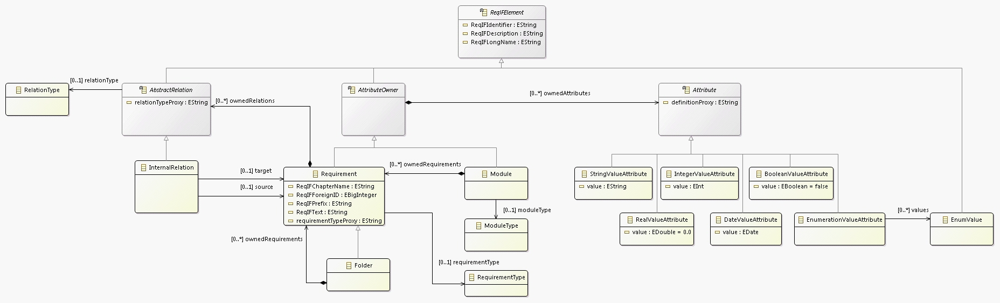
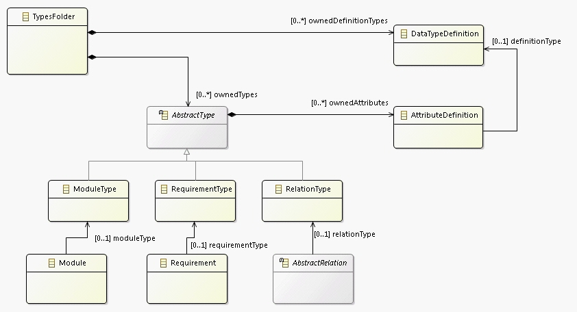
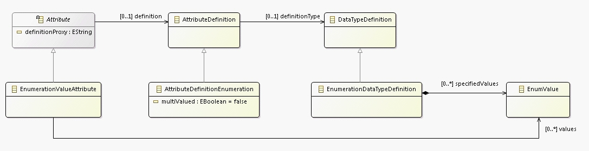
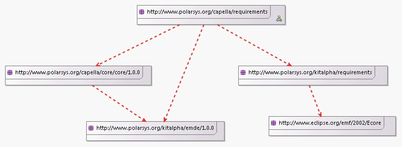
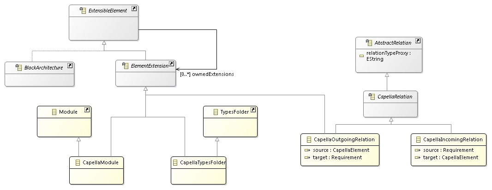

The generic part of the requirements meta-model only depends on ECore.
This class diagram shows the main concepts and relations related to the Requirements.
This class diagram shows the concepts and relations related to the Type Definitions.
This class diagram shows the concepts and relations related to the Enumerations.
The Capella specific part of the requirements meta-model depends on eMDE and Capella.
This class diagram shows how the requirement concepts of the generic meta-model are linked to Capella.
